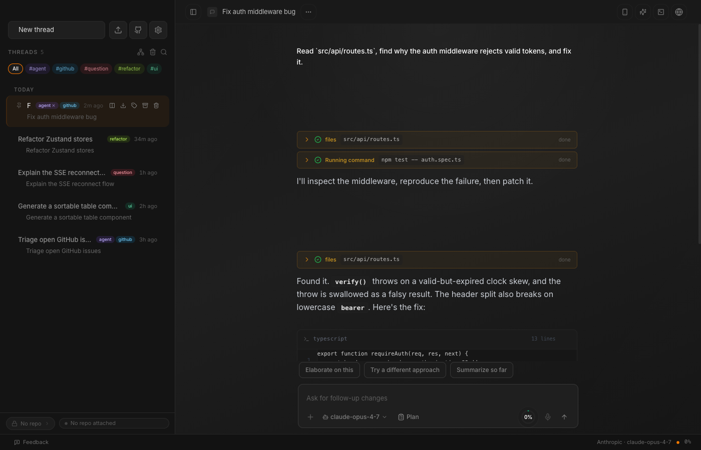
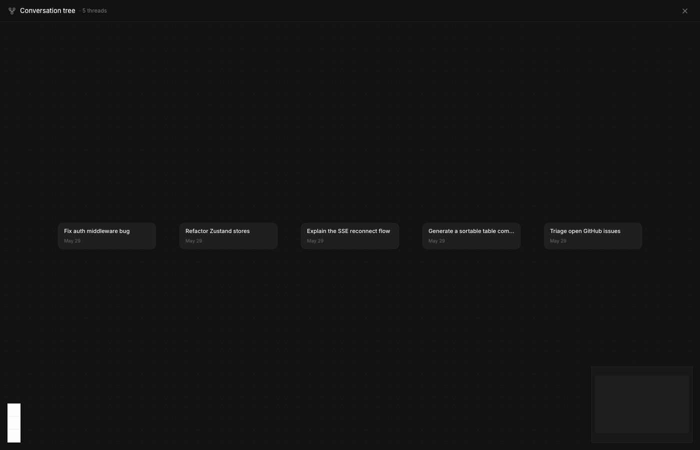
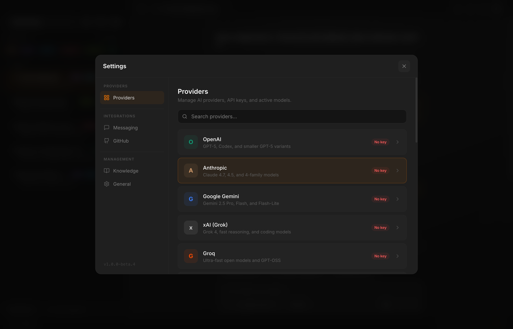
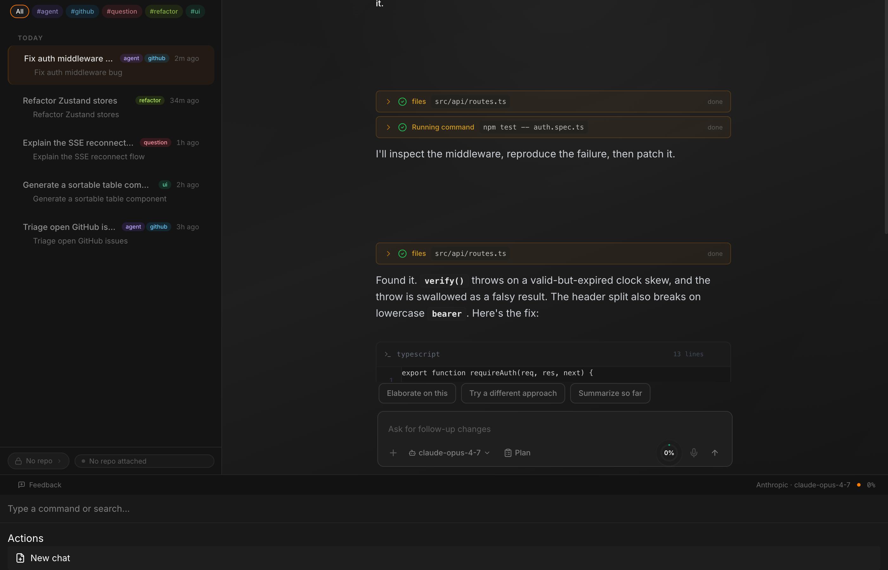

Spark is a fast desktop GUI for Hermes — Nous Research's autonomous agent that reads your code, browses the web, runs terminals, and manages GitHub repos. Connect your Hermes install and drive it from a native app — plus 15 providers for everyday chat.

15 providers, one keychain
Dense where it counts, out of the way where it isn't. Every panel earns its pixels.
Not a chatbot — an autonomous tool loop. Hermes plans, executes, checks the result, and iterates until the task is done. Every tool call, result, and bit of reasoning is visible in real time.
six toolsets · once / session / always approval scopes
Drop in a key or sign in with OAuth. Switch models mid-conversation.
OpenAI · Anthropic · Gemini · xAI · +11
HTML/CSS/JS, React + JSX/TSX, Next.js, Markdown, and Mermaid — rendered as it streams.
in-fence, real time
Browse repos and issues in the sidebar. Click an issue → Hermes gets full context. Review proposed changes with inline diffs, stage files, and open a PR in one click.
repo clone manager · workspace indexer · changeset panel
Isolated chat panels side by side, auto-tiling at 3+. Each carries its own model and history.
Decomposes a request into sub-tasks, runs them concurrently with retry/fallback, then synthesizes.
Branch any session and revisit any turn — visualized with xyflow + dagre. SSE auto-reconnect resumes dropped streams without losing state.

A real shell (xterm + node-pty) beside the chat, plus a command palette for jumping anywhere.
Schedule recurring agent runs. Swap an entire Hermes config — provider, toolsets, prompts — in one click.
native Electron app · global hotkey · tray menu · auto-updates

Spark works as a clean chat client with any provider — Hermes is optional. Manage every key, sign in with OpenRouter OAuth, and switch the active model without leaving the conversation.

Hit ⌘K to fly between conversations, profiles, and actions. The whole app is built around staying in flow — find a thread, switch a model, fire an action, and get back to the code.
The same conversation can run as a full agent, a thin passthrough, or a multi-role swarm.
The default. Plans, calls tools, checks results, iterates — with every step on screen.
planactcheckNo agent overhead — a straight line from your prompt to the provider for plain chat.
promptproviderA pipeline of roles for complex work, with retry and fallback between stages.
archimplreviewKeep track of Hermes sessions, usage, and chats at a glance. Full tour with audio →
Free and open beta. Works as a chat client with any provider — connect your Hermes install when you want it to start doing the work.
macOS arm64 + x64 · Windows 10/11 · Linux AppImage & .deb